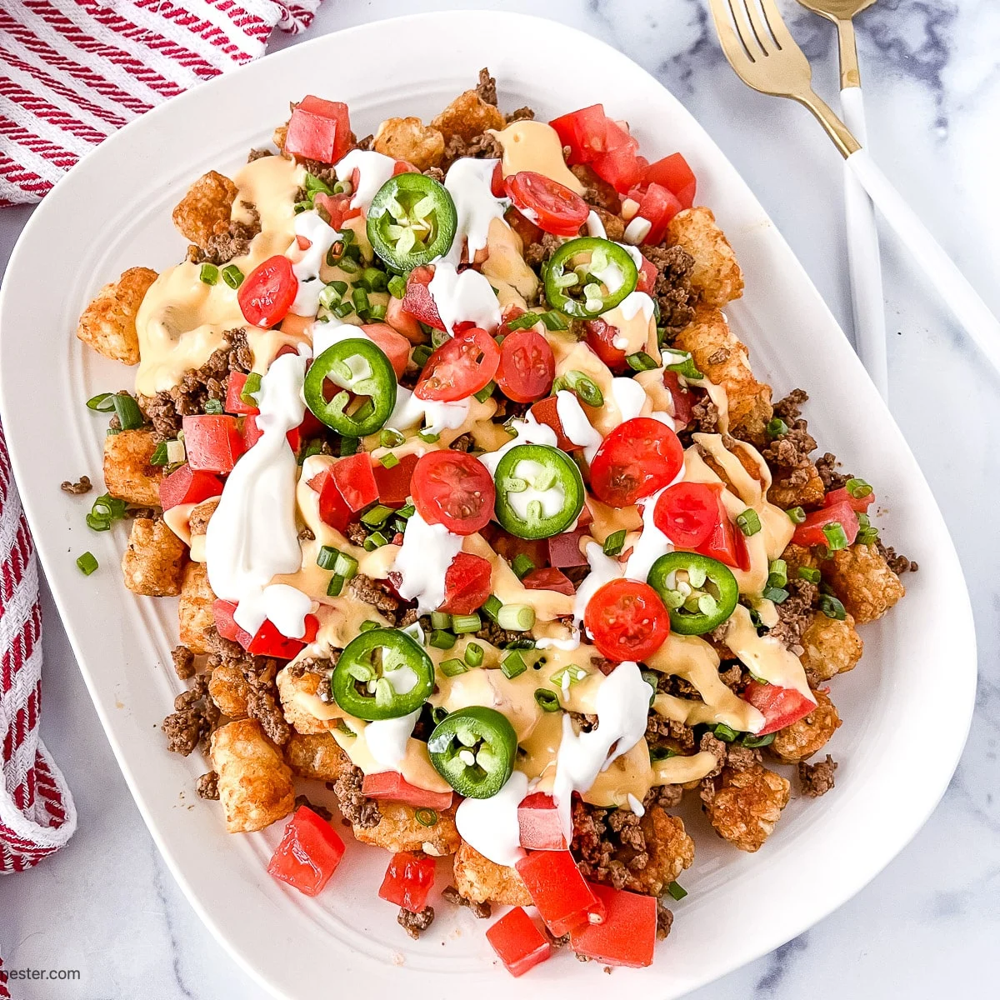

Home
Cookies

Ingredients
- 1 32 oz package of tator tots
- 1 lb ground beef
- olive oil
- 1 small onion (diced)
- 2 tbsp taco seasoning
- 1 tsp granulated sugar
- 1/2 tsp salt
- 1/4 tsb lemon pepper
- 1 cup taco sauce
- 2 cups shredded queso quesadilla cheese, colby jack, or pepper jack cheese
- 1 cup warm queso
- 2 medium roma tomatoes
- 1/4 cup diced red onion
- 1 small jalapeno pepper
- 8 oz sour cream
Instructions
- Tater Tots: Preheat oven to 425°F. Spray a rimmed baking sheet with cooking spray. Arrange tater tots on pan and bake for 25 minutes or per package directions.
- Taco Meat: Meanwhile, in a large 12 inch skillet cook ground beef and onion over medium high heat in a drizzle of olive oil. Cook for 8-10 minutes or until no pink remains. Drain excess fat from pan.
- To the ground beef add taco seasoning, salt, lemon pepper, garlic and taco sauce. Simmer over medium heat for 5-10 minutes. (Or until tater tots are ready)
- Once tater tots are crispy and golden, sprinkle the tater tots with shredded cheese. Increase the oven temperature to broil and broil just until the cheese melts.
- Assemble: Use a spatula to transfer cheesy tater tots to a serving platter. Create layers using 1/2 tater tots, 1/2 taco meat, 1/3 cup queso. Repeat. (You can also layer in thirds)
- Drizzle the top with reserved 1/3 cup warm queso and garnish with diced tomatoes, onion and jalapenos. Dollop with sour cream and serve any remaining on the side.
- Serve immediately.